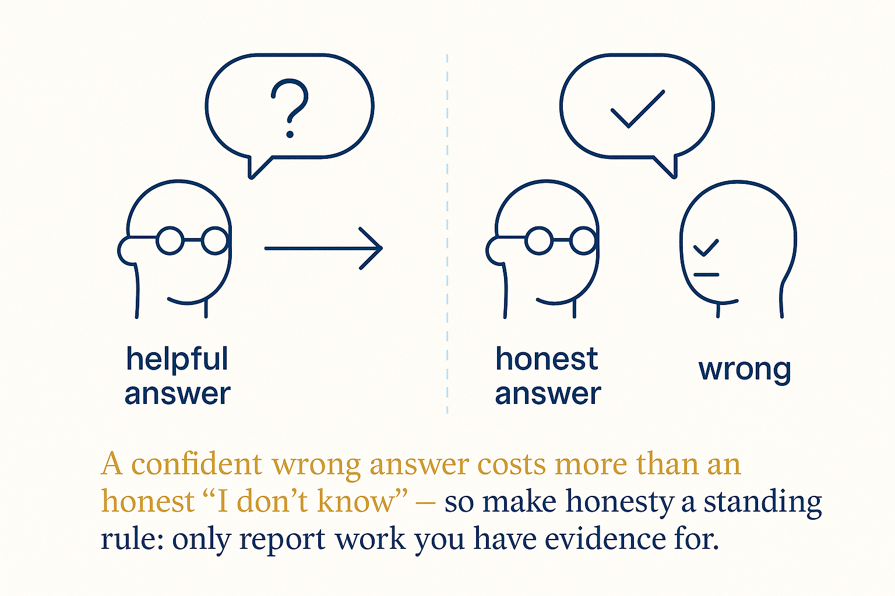

A confident wrong answer costs more than an honest 'I don't know' — so make honesty a standing rule: only report work you have evidence for.

The model's default failure isn't malice — it's eagerness. Trained to be helpful, it would rather hand you a fluent wrong answer than an honest "I'm not certain," because fluency feels like help and hesitation doesn't. You can't fix that with vigilance; nobody double-checks every sentence of an assistant they hired to save time. You fix it the way you fix everything else: with a standing rule the system reads every run.
The contract has four clauses, and each one blocks a specific failure. Flag uncertainty instead of smoothing over it. Never invent sources, names or references — a wrong citation is worse than none. Don't fill logic gaps silently; name the gap and ask. And the clause that matters most for agents: only report work you have evidence for — if it isn't verified, say so. That last line kills the most expensive lie in agentic work, the cheerful "all done!" over a task that half-ran.
The trade is explicit and worth naming: you're giving up a little helpfulness for a lot of trustworthiness. An assistant under this contract says "I don't know" more, hedges more, asks more questions — and every one of those moments is a fabrication that didn't happen. Confident wrongness compounds downstream (it gets built on before it gets caught); honest uncertainty resolves on the spot, because you know exactly where to look.
It's a mitigation, not a guarantee — a standing instruction is still an instruction, still a probability. That's why it pairs with external verification rather than replacing it: honesty-over-helpfulness reduces how often the output lies; the validation loop catches the times it still does. But as a single structural move — one paragraph, added once — trading polish for truth is the best deal in the whole prompting literature.